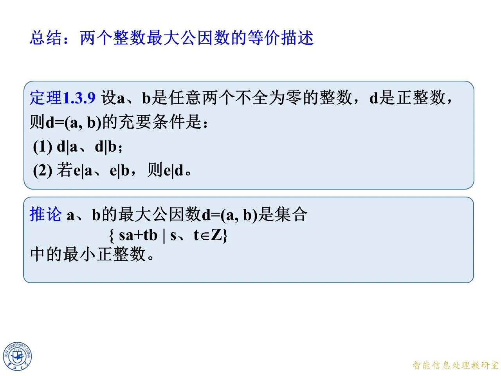
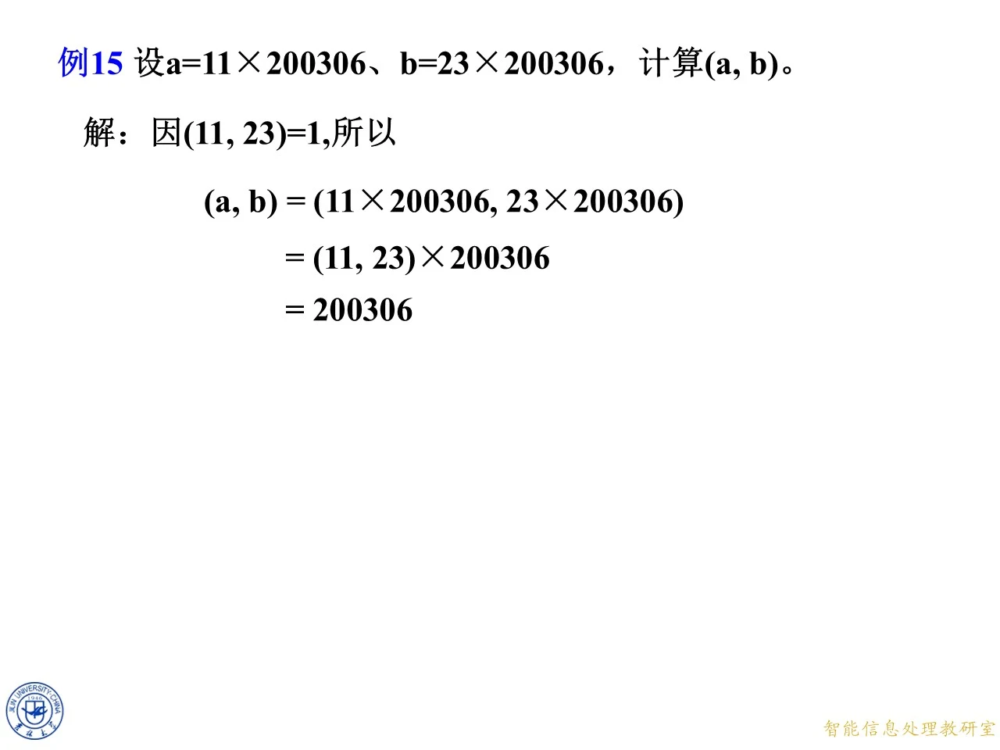
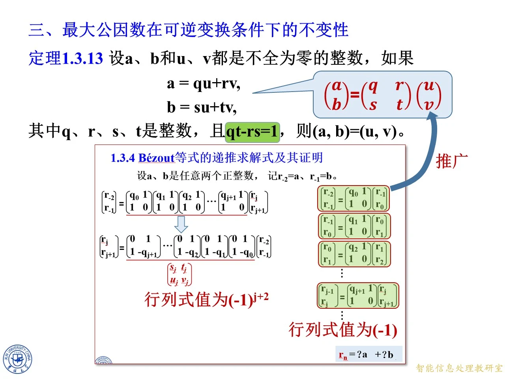

本课承接 1.3 节前面已有的最大公因数定义、Bézout 等式（定理 1.3.5）与辗转相除法，进入 1.3.5 小节「最大公因数的进一步性质」。核心是回答两个问题：其一，除了「最大的公因数」这个字面定义，还能用哪些等价条件刻画最大公因数；其二，最大公因数在哪些变换下可以化简——两数同乘一个数、同除一个公因数、消去一个互素因子、乃至一般的可逆整数变换，最大公因数如何随之变化。这些化简公式是后续求逆元、解同余式时反复使用的工具。
定理 1.3.9：最大公因数的整除刻画
◆ p.595-596 ｜定理 1.3.9 与课后练习
这一页给出最大公因数的第二个等价定义。设 a a a b b b d d d d = ( a , b ) d=(a,b) d = ( a , b )
d ∣ a d\mid a d ∣ a d ∣ b d\mid b d ∣ b 若 e ∣ a e\mid a e ∣ a e ∣ b e\mid b e ∣ b e ∣ d e\mid d e ∣ d
条件 (1) 说 d d d a a a b b b e e e d d d d d d d d d e e e d d d e ∣ d e\mid d e ∣ d e ≤ d e\le d e ≤ d
证明分两半。必要性（⇒ \Rightarrow ⇒ d = ( a , b ) d=(a,b) d = ( a , b ) s s s t t t s a + t b = d sa+tb=d s a + t b = d e ∣ a e\mid a e ∣ a e ∣ b e\mid b e ∣ b e ∣ s a e\mid sa e ∣ s a e ∣ t b e\mid tb e ∣ t b e ∣ s a + t b = d e\mid sa+tb=d e ∣ s a + t b = d ⇐ \Leftarrow ⇐ d d d a a a b b b e ∣ d e\mid d e ∣ d ∣ e ∣ ≤ d |e|\le d ∣ e ∣ ≤ d e e e d d d d = ( a , b ) d=(a,b) d = ( a , b )
p.596 在定理下面附了一道课堂练习：若 d d d d ∣ a + b d\mid a+b d ∣ a + b d ∣ a − b d\mid a-b d ∣ a − b d ∣ ( a , b ) d\mid(a,b) d ∣ ( a , b ) d ∣ 2 a d\mid 2a d ∣ 2 a d ∣ 2 b d\mid 2b d ∣ 2 b d d d 2 a 2a 2 a 2 b 2b 2 b d d d ( d , 2 ) = 1 (d,2)=1 ( d , 2 ) = 1 d ∣ a d\mid a d ∣ a d ∣ b d\mid b d ∣ b d d d a a a b b b d ∣ ( a , b ) d\mid(a,b) d ∣ ( a , b ) ( a , b ) (a,b) ( a , b )
拓展 （课件外补充）：条件「d d d a = b = 1 a=b=1 a = b = 1 d = 2 d=2 d = 2 2 ∣ a + b = 2 2\mid a+b=2 2 ∣ a + b = 2 2 ∣ a − b = 0 2\mid a-b=0 2 ∣ a − b = 0 2 ∤ ( a , b ) = ( 1 , 1 ) = 1 2\nmid(a,b)=(1,1)=1 2 ∤ ( a , b ) = ( 1 , 1 ) = 1 ( d , 2 ) ≠ 1 (d,2)\ne1 ( d , 2 ) = 1 d d d d d d ∣ d ∣ |d| ∣ d ∣
◆ p.597 ｜总结页：定理 1.3.9 与「最小正组合」推论
本页是 1.3.5 第一部分的总结框，重复了定理 1.3.9 的两个条件，并新增一条推论：
d = ( a , b ) 是集合 { s a + t b ∣ s , t ∈ Z } 中的最小正整数 . d=(a,b)\ \text{是集合}\ \{\,sa+tb\mid s,t\in\mathbb{Z}\,\}\ \text{中的最小正整数}. d = ( a , b ) 是集合 { s a + t b ∣ s , t ∈ Z } 中的最小正整数 .
推论的来路是：由 Bézout 等式，d = ( a , b ) d=(a,b) d = ( a , b ) s a + t b sa+tb s a + t b d d d a a a b b b e e e s a + t b sa+tb s a + t b ≥ d \ge d ≥ d d d d 1.3 1.3 1.3
拓展 （课件外补充）：这条推论实际上不需要先证 Bézout 等式再证推论——用「非空正整数集合必有最小元」可以直接证明：{ s a + t b } \{sa+tb\} { s a + t b } a ⋅ 1 + b ⋅ 0 a\cdot 1+b\cdot 0 a ⋅ 1 + b ⋅ 0 m m m m m m a a a b b b a = q m + r a=qm+r a = q m + r 0 ≤ r < m 0\le r<m 0 ≤ r < m r = a − q m r=a-qm r = a − q m m m m r = 0 r=0 r = 0 m m m m = ( a , b ) m=(a,b) m = ( a , b )

课件原图 · 9月9日授课 · 第 597 页 查看前后已收录原页 → 填空题：四条变换公式速测
◆ p.598 ｜填空题（4 分）
本页是一张随堂测验，条件统一为：整数 a a a b b b c c c d d d m > 0 m>0 m > 0
（1）( m a , m b ) = m ( a , b ) (ma,mb)=m(a,b) ( ma , mb ) = m ( a , b ) 是 。m > 0 m>0 m > 0 m m m m m m
（2）若 d ∣ a d\mid a d ∣ a d ∣ b d\mid b d ∣ b ( a d , b d ) = ( a , b ) ∣ d ∣ \left(\dfrac{a}{d},\dfrac{b}{d}\right)=\dfrac{(a,b)}{|d|} ( d a , d b ) = ∣ d ∣ ( a , b ) 是 。注意 d d d ∣ d ∣ |d| ∣ d ∣ d > 0 d>0 d > 0 ( a , b ) / d (a,b)/d ( a , b ) / d
（3）( a ( a , b ) , b ( a , b ) ) = \left(\dfrac{a}{(a,b)},\dfrac{b}{(a,b)}\right)= ( ( a , b ) a , ( a , b ) b ) = 1 1 1 d = ( a , b ) d=(a,b) d = ( a , b ) ( a , b ) / ∣ ( a , b ) ∣ = 1 (a,b)/|(a,b)|=1 ( a , b ) /∣ ( a , b ) ∣ = 1
（4）如果 ( a , c ) = 1 (a,c)=1 ( a , c ) = 1 ( a b , c ) = ( b , c ) (ab,c)=(b,c) ( ab , c ) = ( b , c ) 是 。即与 c c c a a a ( ⋅ , c ) (\cdot,c) ( ⋅ , c )
拓展 （课件外补充）：这四条放在一起记更好：(1) 是「提取公因子」，(2)(3) 是「约去公因子」，(4) 是「消去互素因子」；(1) 取 m = − d m=-d m = − d d < 0 d<0 d < 0 d d d m < 0 m<0 m < 0 ( m a , m b ) = ∣ m ∣ ( a , b ) (ma,mb)=|m|(a,b) ( ma , mb ) = ∣ m ∣ ( a , b )
从 Bézout 等式出发证 ( m a , m b ) = m ( a , b ) (ma,mb)=m(a,b) ( ma , mb ) = m ( a , b )
◆ p.599-610 ｜定理 1.3.5 复述与思考（4）：用 Bézout 等式化简 ( m a , m b ) (ma,mb) ( ma , mb )
这十二页是同一张幻灯片的逐行动画展开，围绕定理 1.3.5（Bézout 等式）做一个思考题：已知 s a + t b = ( a , b ) sa+tb=(a,b) s a + t b = ( a , b ) ( m a , m b ) (ma,mb) ( ma , mb )
起点是定理 1.3.5：设 a a a b b b s s s t t t s a + t b = ( a , b ) sa+tb=(a,b) s a + t b = ( a , b ) a a a b b b e ∣ ( a , b ) e\mid(a,b) e ∣ ( a , b ) e ∣ a e\mid a e ∣ a e ∣ b e\mid b e ∣ b e ∣ s a + t b e\mid sa+tb e ∣ s a + t b
第二层（②）是要证的主结论。把 s a + t b = ( a , b ) sa+tb=(a,b) s a + t b = ( a , b ) m m m
s ( m a ) + t ( m b ) = m ( a , b ) . s(ma)+t(mb)=m(a,b). s ( ma ) + t ( mb ) = m ( a , b ) .
这说明 m ( a , b ) m(a,b) m ( a , b ) m a ma ma m b mb mb e e e m a ma ma m b mb mb e ∣ s ( m a ) + t ( m b ) = m ( a , b ) e\mid s(ma)+t(mb)=m(a,b) e ∣ s ( ma ) + t ( mb ) = m ( a , b )
( m a , m b ) ∣ m ( a , b ) . (ma,mb)\mid m(a,b). ( ma , mb ) ∣ m ( a , b ) .
再看反方向：m ( a , b ) m(a,b) m ( a , b ) m ( a , b ) ∣ m a m(a,b)\mid ma m ( a , b ) ∣ ma m ( a , b ) ∣ m b m(a,b)\mid mb m ( a , b ) ∣ mb ( a , b ) ∣ a (a,b)\mid a ( a , b ) ∣ a ( a , b ) ∣ b (a,b)\mid b ( a , b ) ∣ b m m m m ( a , b ) m(a,b) m ( a , b ) m a ma ma m b mb mb
m ( a , b ) ∣ ( m a , m b ) . m(a,b)\mid(ma,mb). m ( a , b ) ∣ ( ma , mb ) .
两个方向同时整除，而两数都是正数，故相等：因此 ( m a , m b ) = m ( a , b ) (ma,mb)=m(a,b) ( ma , mb ) = m ( a , b )
证明逻辑上值得停一步：对正整数 x x x y y y x ∣ y x\mid y x ∣ y y ∣ x y\mid x y ∣ x x = y x=y x = y ( m a , m b ) ∣ m ( a , b ) (ma,mb)\mid m(a,b) ( ma , mb ) ∣ m ( a , b ) m ( a , b ) ∣ ( m a , m b ) m(a,b)\mid(ma,mb) m ( a , b ) ∣ ( ma , mb )
拓展 （课件外补充）：这页动画实际预演了后面定理 1.3.10 (1) 的标准证明。课件里设 a a a b b b m > 0 m>0 m > 0 m m m ∣ m ∣ ( a , b ) |m|(a,b) ∣ m ∣ ( a , b ) ( m a , m b ) = m ( a , b ) (ma,mb)=m(a,b) ( ma , mb ) = m ( a , b ) ( a , b ) (a,b) ( a , b ) a a a b b b
定理 1.3.10：最大公因数的两条转换公式
◆ p.611-622 ｜定理 1.3.10 及其 (2) 的证明
本节标题变为「二、最大公因数的转换」。定理 1.3.10 设 a a a b b b
(1) 若 m m m ( a m , b m ) = ( a , b ) m (am,bm)=(a,b)m ( am , bm ) = ( a , b ) m
(2) 若非零整数 d d d d ∣ a d\mid a d ∣ a d ∣ b d\mid b d ∣ b ( a d , b d ) = ( a , b ) ∣ d ∣ \left(\dfrac{a}{d},\dfrac{b}{d}\right)=\dfrac{(a,b)}{|d|} ( d a , d b ) = ∣ d ∣ ( a , b )
(1) 就是上一小节思考题的正式化：把 a a a b b b m m m m m m
(2) 的证明是「用 (1) 证 (2)」的示范。当 d ∣ a d\mid a d ∣ a d ∣ b d\mid b d ∣ b a = a ∣ d ∣ ⋅ ∣ d ∣ a=\dfrac{a}{|d|}\cdot|d| a = ∣ d ∣ a ⋅ ∣ d ∣ b = b ∣ d ∣ ⋅ ∣ d ∣ b=\dfrac{b}{|d|}\cdot|d| b = ∣ d ∣ b ⋅ ∣ d ∣ ∣ d ∣ |d| ∣ d ∣ d d d ∣ d ∣ |d| ∣ d ∣ a / d a/d a / d a / ∣ d ∣ a/|d| a /∣ d ∣ d d d ( a d , b d ) = ( a ∣ d ∣ , b ∣ d ∣ ) \left(\frac{a}{d},\frac{b}{d}\right)=\left(\frac{a}{|d|},\frac{b}{|d|}\right) ( d a , d b ) = ( ∣ d ∣ a , ∣ d ∣ b ) m = ∣ d ∣ m=|d| m = ∣ d ∣
( a , b ) = ( a ∣ d ∣ ⋅ ∣ d ∣ , b ∣ d ∣ ⋅ ∣ d ∣ ) = ( a ∣ d ∣ , b ∣ d ∣ ) ∣ d ∣ = ( a d , b d ) ∣ d ∣ . (a,b)=\left(\frac{a}{|d|}\cdot|d|,\ \frac{b}{|d|}\cdot|d|\right)=\left(\frac{a}{|d|},\frac{b}{|d|}\right)|d|=\left(\frac{a}{d},\frac{b}{d}\right)|d|. ( a , b ) = ( ∣ d ∣ a ⋅ ∣ d ∣ , ∣ d ∣ b ⋅ ∣ d ∣ ) = ( ∣ d ∣ a , ∣ d ∣ b ) ∣ d ∣ = ( d a , d b ) ∣ d ∣.
最后一步用 ( ± x , ± y ) = ( x , y ) (\pm x,\pm y)=(x,y) ( ± x , ± y ) = ( x , y ) a / d a/d a / d a / ∣ d ∣ a/|d| a /∣ d ∣ ∣ d ∣ |d| ∣ d ∣
( a d , b d ) = ( a , b ) ∣ d ∣ . \left(\frac{a}{d},\frac{b}{d}\right)=\frac{(a,b)}{|d|}. ( d a , d b ) = ∣ d ∣ ( a , b ) .
课件随后亮出特别情形：取 d = ( a , b ) d=(a,b) d = ( a , b )
( a ( a , b ) , b ( a , b ) ) = 1. \left(\frac{a}{(a,b)},\frac{b}{(a,b)}\right)=1. ( ( a , b ) a , ( a , b ) b ) = 1.
即两数同除以最大公因数后互素。这呼应了 p.598 填空题的第 (3) 空。
拓展 （课件外补充）：课件在证明 (2) 时直接默认了 ( ± x , ± y ) = ( x , y ) (\pm x,\pm y)=(x,y) ( ± x , ± y ) = ( x , y ) a a a a ∣ d ∣ ⋅ ∣ d ∣ \frac{a}{|d|}\cdot|d| ∣ d ∣ a ⋅ ∣ d ∣ ∣ d ∣ ∣ a |d|\mid a ∣ d ∣ ∣ a d ∣ a d\mid a d ∣ a − d ∣ a -d\mid a − d ∣ a d d d a a a b b b d d d ∣ d ∣ |d| ∣ d ∣ d > 0 d>0 d > 0 ( a / d , b / d ) = ( a , b ) / d (a/d,b/d)=(a,b)/d ( a / d , b / d ) = ( a , b ) / d
例 15：提取公因数求最大公因数
◆ p.623 ｜例 15
例 15：设 a = 11 × 200306 a=11\times 200306 a = 11 × 200306 b = 23 × 200306 b=23\times 200306 b = 23 × 200306 ( a , b ) (a,b) ( a , b )
思路：两数含公共因子 200306 200306 200306 ( 11 , 23 ) = 1 (11,23)=1 ( 11 , 23 ) = 1
( a , b ) = ( 11 × 200306 , 23 × 200306 ) = ( 11 , 23 ) × 200306 = 200306. (a,b)=(11\times 200306,\ 23\times 200306)=(11,23)\times 200306=200306. ( a , b ) = ( 11 × 200306 , 23 × 200306 ) = ( 11 , 23 ) × 200306 = 200306.
注意例题的写法：这里用到的 ( a m , b m ) = ( a , b ) m (am,bm)=(a,b)m ( am , bm ) = ( a , b ) m m = 200306 > 0 m=200306>0 m = 200306 > 0 ( 11 , 23 ) = 1 (11,23)=1 ( 11 , 23 ) = 1 ( 11 , 23 ) = 1 (11,23)=1 ( 11 , 23 ) = 1 ( 11 , 23 ) × 200306 (11,23)\times 200306 ( 11 , 23 ) × 200306 1 × 200306 = 200306 1\times200306=200306 1 × 200306 = 200306 a = 2203366 a=2203366 a = 2203366 b = 4607038 b=4607038 b = 4607038 200306 200306 200306

课件原图 · 9月9日授课 · 第 623 页 查看前后已收录原页 → 定理 1.3.11：消去互素因子
◆ p.624-636 ｜从问题到定理 1.3.11 的证明
这十三页是同一版式的动画逐步页，从一个问题推出定理 1.3.11。问题：如果 ( a , c ) = 1 (a,c)=1 ( a , c ) = 1 ( a b , c ) (ab,c) ( ab , c )
推导步骤如下。第一步，若 ( a , c ) = 1 (a,c)=1 ( a , c ) = 1 s s s t t t
s a + t c = 1. sa+tc=1. s a + t c = 1.
第二步，两端同乘以 b b b
s ( a b ) + ( t b ) c = b . s(ab)+(tb)c=b. s ( ab ) + ( t b ) c = b .
这个等式是整个证明的枢纽：它把 b b b a b ab ab c c c ( a b , c ) ∣ ( b , c ) (ab,c)\mid(b,c) ( ab , c ) ∣ ( b , c ) e = ( a b , c ) e=(ab,c) e = ( ab , c ) e ∣ a b e\mid ab e ∣ ab e ∣ c e\mid c e ∣ c e ∣ s ( a b ) + ( t b ) c = b e\mid s(ab)+(tb)c=b e ∣ s ( ab ) + ( t b ) c = b e e e b b b c c c b b b c c c ( a b , c ) ∣ ( b , c ) (ab,c)\mid(b,c) ( ab , c ) ∣ ( b , c ) ( b , c ) (b,c) ( b , c ) c c c ( b , c ) ∣ b (b,c)\mid b ( b , c ) ∣ b ( b , c ) ∣ a b (b,c)\mid ab ( b , c ) ∣ ab ( b , c ) (b,c) ( b , c ) a b ab ab c c c ( b , c ) ∣ ( a b , c ) (b,c)\mid(ab,c) ( b , c ) ∣ ( ab , c )
( a b , c ) = ( b , c ) . (ab,c)=(b,c). ( ab , c ) = ( b , c ) .
最后课件把结论正名为定理 1.3.11：设 a a a b b b c c c b ≠ 0 b\ne0 b = 0 c ≠ 0 c\ne0 c = 0 ( a , c ) = 1 (a,c)=1 ( a , c ) = 1 ( a b , c ) = ( b , c ) (ab,c)=(b,c) ( ab , c ) = ( b , c )
条件 b ≠ 0 b\ne 0 b = 0 c ≠ 0 c\ne0 c = 0 c = 0 c=0 c = 0 ( x , 0 ) = ∣ x ∣ (x,0)=|x| ( x , 0 ) = ∣ x ∣ ( a b , 0 ) = ∣ a b ∣ = ∣ a ∣ ∣ b ∣ (ab,0)=|ab|=|a||b| ( ab , 0 ) = ∣ ab ∣ = ∣ a ∣∣ b ∣ ( b , 0 ) = ∣ b ∣ (b,0)=|b| ( b , 0 ) = ∣ b ∣ ∣ a ∣ |a| ∣ a ∣ b = 0 b=0 b = 0 ( 0 , c ) = c (0,c)=c ( 0 , c ) = c ( 0 , c ) = c (0,c)=c ( 0 , c ) = c ( 0 , 0 ) (0,0) ( 0 , 0 ) b = 0 b=0 b = 0 c = 0 c=0 c = 0 ( 0 , 0 ) (0,0) ( 0 , 0 )
拓展 （课件外补充）：证明里两次用「互相整除则相等」，与前证 ( m a , m b ) = m ( a , b ) (ma,mb)=m(a,b) ( ma , mb ) = m ( a , b ) x x x y y y c c c c c c p p p p ∣ a b p\mid ab p ∣ ab p ∤ a p\nmid a p ∤ a p ∣ b p\mid b p ∣ b c = p c=p c = p
例 16 与定理 1.3.12：互素因子的连乘
◆ p.637-643 ｜例 16、定理 1.3.12（数学归纳法）
这一组页面把定理 1.3.11 的两个推论连成一条链（课件原页以箭头标出递进关系）。
例 16：设 a a a b b b c c c ( a , c ) = 1 (a,c)=1 ( a , c ) = 1 ( b , c ) = 1 (b,c)=1 ( b , c ) = 1 ( a b , c ) = 1 (ab,c)=1 ( ab , c ) = 1 a : = a a:=a a := a b : = b b:=b b := b ( a b , c ) = ( b , c ) = 1 (ab,c)=(b,c)=1 ( ab , c ) = ( b , c ) = 1 c c c c c c
定理 1.3.12：设 a 1 a_1 a 1 a 2 a_2 a 2 … \ldots … a n a_n a n c c c ( a i , c ) = 1 (a_i,c)=1 ( a i , c ) = 1 1 ≤ i ≤ n 1\le i\le n 1 ≤ i ≤ n
( a 1 a 2 ⋯ a n , c ) = 1. (a_1a_2\cdots a_n,c)=1. ( a 1 a 2 ⋯ a n , c ) = 1.
课件注明「用数学归纳法，证明略」。补全归纳过程（拓展 （课件外补充）：课件略去，此处按课件提示的思路补全）：奠基 n = 1 n=1 n = 1 ( a 1 ⋯ a n − 1 , c ) = 1 (a_1\cdots a_{n-1},c)=1 ( a 1 ⋯ a n − 1 , c ) = 1 a a a a n a_n a n b b b ( a 1 ⋯ a n , c ) = 1 (a_1\cdots a_n,c)=1 ( a 1 ⋯ a n , c ) = 1
拓展 （课件外补充）：注意定理 1.3.12 与「整体互素」概念的区别：它说的是每个 a i a_i a i c c c c c c ( a 1 ⋯ a n , c ) > 1 (a_1\cdots a_n,c)>1 ( a 1 ⋯ a n , c ) > 1 i i i ( a i , c ) > 1 (a_i,c)>1 ( a i , c ) > 1 c = p c=p c = p p ∣ p\mid p ∣ p ∣ p\mid p ∣
思考：互素因子分别整除则乘积整除
◆ p.644-646 ｜思考题（定理 1.4.4 之 (1) 的预告）
思考题：利用定理 1.3.11 证明——设 a a a b b b D D D ( a , b ) = 1 (a,b)=1 ( a , b ) = 1 a ∣ D a\mid D a ∣ D b ∣ D b\mid D b ∣ D a b ∣ D ab\mid D ab ∣ D
课件给出提示，按提示走一遍完整证明。第一步，由 a ∣ D a\mid D a ∣ D a > 0 a>0 a > 0 ( a , D ) = a (a,D)=a ( a , D ) = a a a a D D D a a a D D D a a a ( b , D ) = b (b,D)=b ( b , D ) = b b b b b ∣ D b\mid D b ∣ D D / b D/b D / b
( a b , D ) = ( b ⋅ a , b ⋅ ( D / b ) ) = b ( a , D / b ) . (ab,D)=\bigl(b\cdot a,\ b\cdot (D/b)\bigr)=b\,(a,\ D/b). ( ab , D ) = ( b ⋅ a , b ⋅ ( D / b ) ) = b ( a , D / b ) .
第三步处理 ( a , D / b ) (a,D/b) ( a , D / b ) b ∣ D b\mid D b ∣ D a ∣ D a\mid D a ∣ D ( a , b ) = 1 (a,b)=1 ( a , b ) = 1 ( a , b D ) = 1 (a,bD)=1 ( a , b D ) = 1 ( a , b ) = 1 (a,b)=1 ( a , b ) = 1 b ( a , D / b ) = b ( a , b D / b ) = b ( a , D ) = b a = a b b(a,D/b)=b(a,bD/b)=b(a,D)=ba=ab b ( a , D / b ) = b ( a , b D / b ) = b ( a , D ) = ba = ab ( a , b D ) (a,\,bD) ( a , b D ) b b b ( b ⋅ a , c ) (b\cdot a,\,c) ( b ⋅ a , c ) ( a , b D / b ) (a,bD/b) ( a , b D / b )
b ( a , D / b ) = b ( a , b ⋅ D / b ) = b ( a , D ) = b a = a b . b\,(a,\ D/b)=b\,(a,\ b\cdot D/b)=b\,(a,\ D)=ba=ab. b ( a , D / b ) = b ( a , b ⋅ D / b ) = b ( a , D ) = ba = ab .
中间一步 b ( a , D / b ) = b ( a , b D / b ) b(a,\,D/b)=b(a,\,bD/b) b ( a , D / b ) = b ( a , b D / b ) ( a , b D ) = 1 (a,\ bD)=1 ( a , b D ) = 1 b ( a , D / b ) b(a, D/b) b ( a , D / b ) ( a , b ) = 1 (a,b)=1 ( a , b ) = 1 ( a , D ) = ( a , b ⋅ D / b ) = ( D / b (a, D)=(a, b\cdot D/b)=(D/b ( a , D ) = ( a , b ⋅ D / b ) = ( D / b ( a , b ) = 1 (a,b)=1 ( a , b ) = 1 a : = b a:=b a := b b : = D / b b:=D/b b := D / b c : = a c:=a c := a ( b , a ) = 1 (b,a)=1 ( b , a ) = 1
( b ⋅ ( D / b ) , a ) = ( D / b , a ) , 即 ( D , a ) = ( D / b , a ) . \bigl(b\cdot (D/b),\ a\bigr)=(D/b,\ a),\quad\text{即}\ (D,a)=(D/b,a). ( b ⋅ ( D / b ) , a ) = ( D / b , a ) , 即 ( D , a ) = ( D / b , a ) .
因为 D = b ⋅ ( D / b ) D=b\cdot(D/b) D = b ⋅ ( D / b ) b b b a a a ( D , a ) = ( b ⋅ ( D / b ) , a ) (D,a)=(b\cdot(D/b),a) ( D , a ) = ( b ⋅ ( D / b ) , a ) b b b ( D , a ) = ( D / b , a ) (D,a)=(D/b,a) ( D , a ) = ( D / b , a )
( a b , D ) = b ( a , D / b ) = b ( a , D ) = b ⋅ a = a b . (ab,D)=b\,(a,D/b)=b\,(a,D)=b\cdot a=ab. ( ab , D ) = b ( a , D / b ) = b ( a , D ) = b ⋅ a = ab .
而 ( a b , D ) = a b (ab,D)=ab ( ab , D ) = ab a b ab ab D D D a b ab ab D D D a b ∣ D ab\mid D ab ∣ D
拓展 （课件外补充）：这个命题在非互素时不真：a = b = 2 a=b=2 a = b = 2 D = 4 D=4 D = 4 D D D 4 ∤ 4 4\nmid 4 4 ∤ 4 a b = 4 ab=4 ab = 4 a = b = 2 a=b=2 a = b = 2 D = 2 D=2 D = 2 2 ∣ 2 2\mid 2 2 ∣ 2 2 ∣ 2 2\mid 2 2 ∣ 2 a b = 4 ∤ 2 ab=4\nmid 2 ab = 4 ∤ 2
定理 1.3.13：可逆整数变换下的不变性
◆ p.647-660 ｜定理 1.3.13 及 1.3.4 Bézout 等式的递推求解式
本节标题「三、最大公因数在可逆变换条件下的不变性」。定理 1.3.13：设 a a a b b b u u u v v v
a = q u + r v , b = s u + t v , a=qu+rv,\qquad b=su+tv, a = q u + r v , b = s u + t v ,
其中 q q q r r r s s s t t t q t − r s = 1 qt-rs=1 qt − rs = 1 ( a , b ) = ( u , v ) (a,b)=(u,v) ( a , b ) = ( u , v ) ( a , b ) (a,b) ( a , b ) ( q , r ; s , t ) (q,r;s,t) ( q , r ; s , t ) q , r q,r q , r s , t s,t s , t ( u , v ) (u,v) ( u , v ) q t − r s qt-rs qt − rs q t − r s = 1 qt-rs=1 qt − rs = 1 − 1 -1 − 1 ± 1 \pm1 ± 1
证明：令 d = ( a , b ) d=(a,b) d = ( a , b ) d ′ = ( u , v ) d'=(u,v) d ′ = ( u , v ) d ′ ∣ d d'\mid d d ′ ∣ d d ′ ∣ u d'\mid u d ′ ∣ u d ′ ∣ v d'\mid v d ′ ∣ v d ′ ∣ q u + r v = a d'\mid qu+rv=a d ′ ∣ q u + r v = a d ′ ∣ s u + t v = b d'\mid su+tv=b d ′ ∣ s u + t v = b d ′ d' d ′ a a a b b b d ′ ∣ d d'\mid d d ′ ∣ d d ∣ d ′ d\mid d' d ∣ d ′ u u u v v v a a a b b b 1 1 1 t ⋅ a − r ⋅ b = t ( q u + r v ) − r ( s u + t v ) = ( t q − r s ) u = u t\cdot a-r\cdot b=t(qu+rv)-r(su+tv)=(tq-rs)u=u t ⋅ a − r ⋅ b = t ( q u + r v ) − r ( s u + t v ) = ( tq − rs ) u = u − s ⋅ a + q ⋅ b = ( q t − r s ) v = v -s\cdot a+q\cdot b=(qt-rs)v=v − s ⋅ a + q ⋅ b = ( qt − rs ) v = v u = t a − r b , v = − s a + q b . u=ta-rb,\qquad v=-sa+qb. u = t a − r b , v = − s a + q b .
于是 d ∣ a d\mid a d ∣ a d ∣ b d\mid b d ∣ b d ∣ t a − r b = u d\mid ta-rb=u d ∣ t a − r b = u d ∣ − s a + q b = v d\mid -sa+qb=v d ∣ − s a + q b = v d ∣ d ′ d\mid d' d ∣ d ′ d = d ′ d=d' d = d ′
「同理可证得 d ∣ d ′ d\mid d' d ∣ d ′ u = t a − r b u=ta-rb u = t a − r b v = − s a + q b v=-sa+qb v = − s a + q b ± 1 \pm1 ± 1 t q − r s = ± 1 tq-rs=\pm1 tq − rs = ± 1
p.658-660 随后把这一定理与辗转相除法衔接，展示 1.3.4「Bézout 等式的递推求解式及其证明」的矩阵图：设 a a a b b b r − 2 = a r_{-2}=a r − 2 = a r − 1 = b r_{-1}=b r − 1 = b r j − 1 = q j + 1 r j + r j + 1 r_{j-1}=q_{j+1}r_j+r_{j+1} r j − 1 = q j + 1 r j + r j + 1 − 1 -1 − 1 ( q j + 1 , 1 ; 1 , 0 ) (q_{j+1},1;1,0) ( q j + 1 , 1 ; 1 , 0 ) ( r j , r j + 1 ) (r_j,r_{j+1}) ( r j , r j + 1 ) a a a b b b ( − 1 ) j + 2 (-1)^{j+2} ( − 1 ) j + 2 ± 1 \pm1 ± 1 ± 1 \pm1 ± 1 ( r j − 1 , r j ) (r_{j-1},r_j) ( r j − 1 , r j ) ( a , b ) (a,b) ( a , b ) ( a , b ) (a,b) ( a , b ) r n = ? a + ? b r_n=?a+?b r n = ? a + ? b
拓展 （课件外补充）：定理 1.3.13 是前面所有变换公式的统一：取 q = m , t = 1 , r = s = 0 q=m,t=1,r=s=0 q = m , t = 1 , r = s = 0 ( m a , m b ) = m ( a , b ) (ma,mb)=m(a,b) ( ma , mb ) = m ( a , b ) q = t = 1 , r = − 1 , s = 0 q=t=1,r=-1,s=0 q = t = 1 , r = − 1 , s = 0 a = u − v a=u-v a = u − v ( a , b ) = ( b − a , b ) (a,b)=(b-a,b) ( a , b ) = ( b − a , b ) ± 1 \pm1 ± 1 q = 2 , r = 0 , s = 0 , t = 3 q=2,r=0,s=0,t=3 q = 2 , r = 0 , s = 0 , t = 3 6 ≠ 0 6\ne0 6 = 0 u = 2 , v = 2 u=2,v=2 u = 2 , v = 2 a = 4 , b = 6 a=4,b=6 a = 4 , b = 6 ( a , b ) = 2 (a,b)=2 ( a , b ) = 2 ( u , v ) = 2 (u,v)=2 ( u , v ) = 2 ( a , b ) = ( 4 , 6 ) = 2 (a,b)=(4,6)=2 ( a , b ) = ( 4 , 6 ) = 2 ( u , v ) = ( 2 , 2 ) = 2 (u,v)=(2,2)=2 ( u , v ) = ( 2 , 2 ) = 2 u = 1 , v = 1 u=1,v=1 u = 1 , v = 1 a = 2 , b = 3 a=2,b=3 a = 2 , b = 3 ( a , b ) = 1 = ( u , v ) (a,b)=1=(u,v) ( a , b ) = 1 = ( u , v ) u = 2 , v = 0 u=2,v=0 u = 2 , v = 0 a = 4 , b = 0 a=4,b=0 a = 4 , b = 0 ( a , b ) = 4 ≠ ( u , v ) = 2 (a,b)=4\ne(u,v)=2 ( a , b ) = 4 = ( u , v ) = 2 6 6 6 u = ( t a − r b ) / 6 u=(ta-rb)/6 u = ( t a − r b ) /6 ± 1 \pm1 ± 1

课件原图 · 9月9日授课 · 第 660 页 查看前后已收录原页 → 重复收录页：p.277-342 为同一课件的另两次授课帧
◆ p.277-342 ｜三份授课 PDF 逐页对照说明（与 p.595-660 为同一课件，p.277-342 为重复收录页块）
清单把这同一课件收录了三次：9月9日授课（编页 p.595-660）、「9月11日授课（2）」（编页 p.277-342）、《第一章第3节-原版》（编页 p.277-342，且与 9月9日版复用完全相同的图片资源）。逐张核对后确认：p.277 对应 p.595（定理 1.3.9 及证明）、p.278 对应 p.596（练习）、p.279 对应 p.597（总结与推论）、p.280 对应 p.598（填空题）、p.281-292 对应 p.599-610（Bézout 思考 (4) 的逐行动画）、p.293-304 对应 p.611-622（定理 1.3.10）、p.305 对应 p.623（例 15）、p.306-317 对应 p.624-635（定理 1.3.11 推导动画）、p.318-328 对应 p.636-646（例 16、定理 1.3.12 与思考题）、p.329-342 对应 p.647-660（定理 1.3.13 及递推求解式）。p.277-342 整段为前段 p.595-660 的重复收录页，两版唯一差别是页脚署名的 OCR 差异（「智能信息处理教研室」与「智能信心处理教研室」，图像本身一致），内容无任何实质不同，故全部知识讲解以上文 p.595-660 的页块为准，此处不再重复展开。
拓展 （课件外补充）：自检时可用 p.277-342 版做「遮盖回忆」：翻到 p.293 先自己复述定理 1.3.10 (2) 及其证明框架，再翻回本课对应页块核对；同一内容两次出现正是检验记忆牢固度的机会。